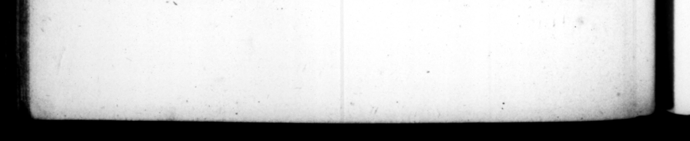

oy _ — —— = = er nn = n "Ta plurimos & "wa 36 n Fa cuique A Arctiore e e e e rititates detentus ꝗdondam medio Foto + turbs, convi-. riſque, ac mul fragminibus 308 ita 5 ur Egre 7 nifi poſtico evadere in iraVit ad in- vehendos « I Hen de Nam Ek: Week 0- BY 1 1 RED iow | buils ſhips ſor _ Neat pri vi r liberorm : qu conſtituta hodie ſervantur. f e : hich kahl un of of 4 22 So era magna potius eit: præcipha quamquam ſciret en his alWa ab Auguſto precantiaſſidue is NegUum, erm I D. Julio ſpins deſtinatum, . : © POPE _ cultatem omiſſum. aqua gelides & W 155 tes, quorum alteri _ Czruleo, alteri Ciirio & Albudino nomen elit $ Hl e rivum Anienis novi lapideo opere in urbem — diviſica que natiſſindos . Fucinum aggreſſus 55 non minus compend 11 quam gloriz, cum WI privaco. ſumptu emiſſuros repromitterent, fi ſibi ſiceati agri concederentur, Per tria amem paſſuum millia partim eſſoſſo monte partim exciſo, canalem ablolvit ægre, & lt undecim annos ; quamis continuis triginta homiatium! valiterit ; nihil non 5 min tempore i m- "mol le — * 40 bes Hed cs tw the winter- e4{08, 7 78 | INE e n n conicuit,,... 17. Pro cdudicionnle U civi © yacationem legis 18 PO Latino jus d jus qua85 nece wap. aged, dur Gags 2 Ca debe: 4 tum, emiſſariam _Fucint lacus, porrumque Oftieiſn : mala upon the PI 3 24 chen — 1 their merit. — 4 dearth, occaſtoned by bad cro 2 together, he = — 2. — pelted 25 1 4 bread 2 te, i with 7 _—_— £90 at laſt, by a back-dow, Aud therefore, he uſed proviſions te poſe to 1 I that befall x — bom ea 5 * ral circumſtances. 15. Tas citizen of Rome he 142 rom whe ag of rhe tl Tasia, the cit; to 7 Jus by 7 2225 74 2 25 * . rei were rather great than * 2 Were, an aque-d was begun by Caius, a al e of che Heins lake =: 48 15 44 2257 been . | fe. 7 22 5 ps prove of it's fray 7 ng of, 7 2 „ which is called Colas and the other Curtius and Albudinus ; 65 alſo the river of the new Alien in s None canal, * ai poſed 1 into great many ſme attempt ea the Fucine . 11 much from the expeFation of advantage, 4: the gle, 2 oper the performance ; ſince ſome a to dan it, at their dun ere, on condition "they witht have 4 52 of th: land that would be left. He finifſh:4 4 canal of three 3 length, by partly cutting thr partly ling n® mountain, 5 77 5 2 of arfs;ulty, thirty thouſand ing conſtantly Rent # in that work for eleven gear: 22 v. . —
